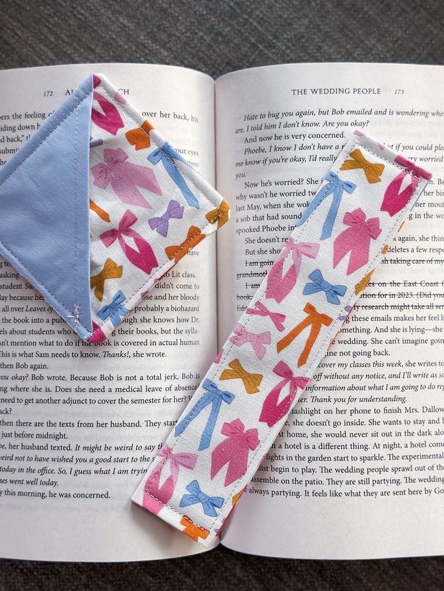
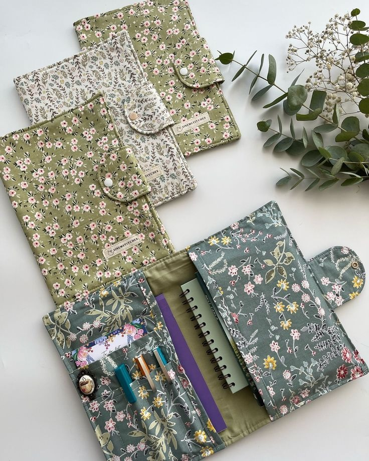
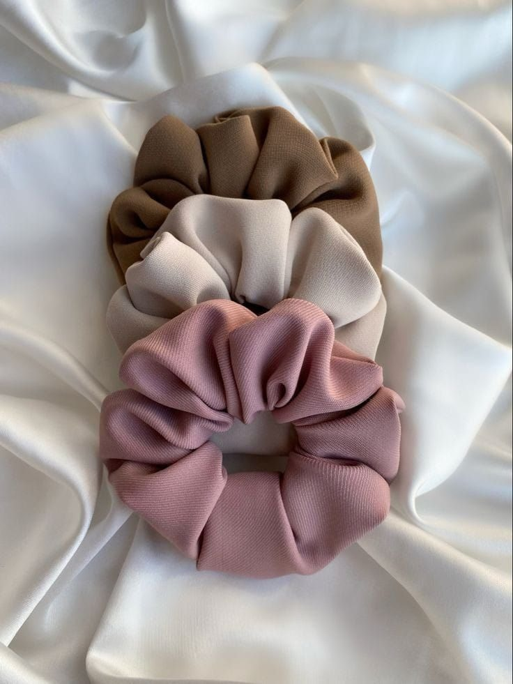

Malzemeler:
• Kumaş
• Dikiş ipliği, iğne
• Makas
• (Opsiyonel) Karton, süsleme malzemeleri
Adımlar:
1-4x15 cm boyutunda kumaş parçası kesin.
2-Kumaşın kenarlarını düzgünce katlayın ve sabitleyin.
3-Kumaşın kısa kenarlarını dikişle sabitleyin.
4-İsteğe bağlı olarak, boncuk, dantel veya iplik ile süsleme ekleyin.
5-(Opsiyonel) Ayraç daha sert olsun isterseniz, kumaşı kartonla güçlendirin.

Malzemeler:
• Kumaş (ana parça ve cepler için)
• Düğme
• Dikiş ipliği ve iğne
• Makas
Adımlar:
1-Ana parça için 20x30 cm, cepler için 8x15 cm ve 15x20 cm kumaşlar kesin.
2-Ceplerin üst kenarlarını katlayıp dikin, ardından ana parçaya yerleştirip sabitleyin.
3-Alt kısmı katlayıp dikin.
4-Ana kumaşın üst kısmına düğme için yer açın, düğmeyi dikerek organizeri kapatabilirsiniz.
5-Organize edilen bölmeleri kontrol edin ve kenarları düzgünleştirin.

Malzemeler:
• Kumaş
• Yuvarlak ince toka
• İğne, iplik
• (Opsiyonel) Düğme veya süsleme
Adımlar:
1-Kumaşı, toka nın çapına göre yuvarlak şekilde kesin.
2-Kumaşın kenarlarını katlayıp dikin.
3-Kumaşı toka aparatına sıkıca oturtup sabitleyin.